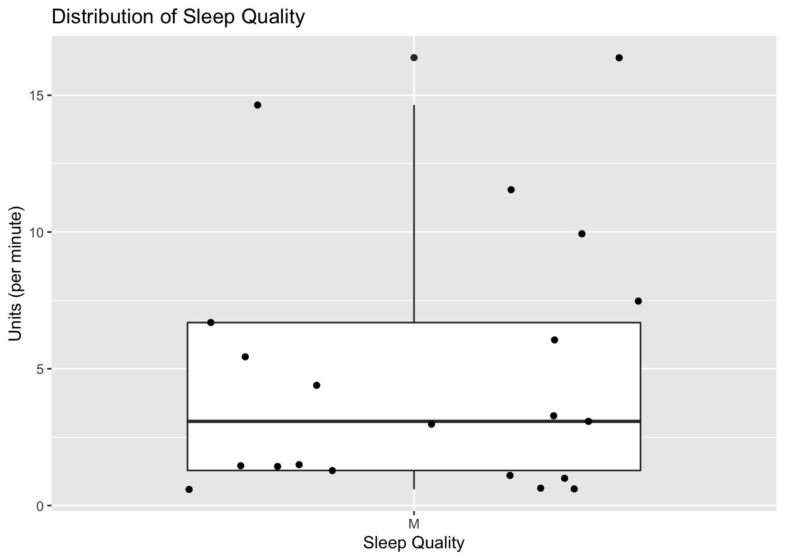
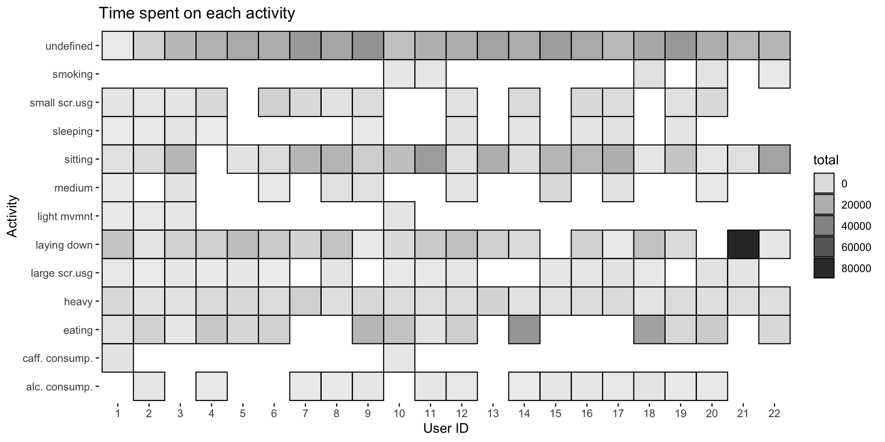
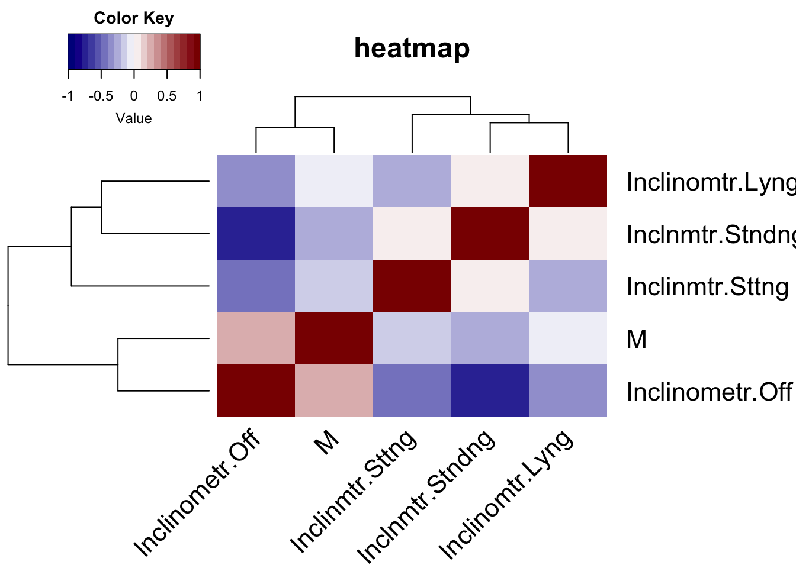
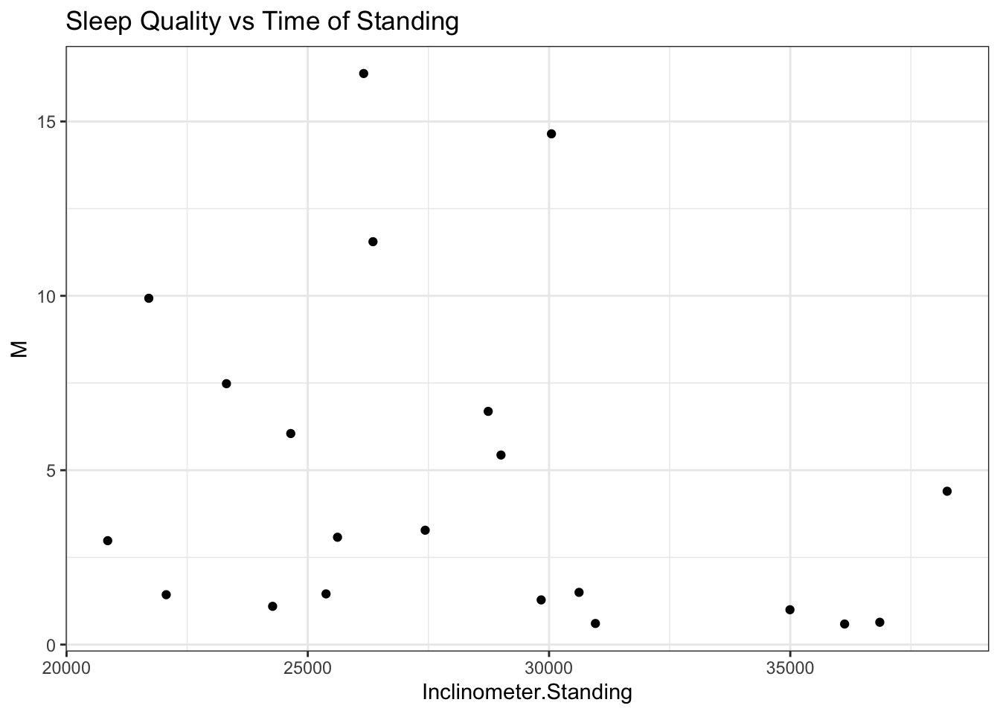

Chapter 5 Results
The results chapter is broadly divided into two sections - one for each of the goals of this project. The first section will document all preliminary findings related to the sleep measurements and the procedure of defining a metric for quantifying quality of sleep.
5.1 Metric Formulation
5.1.1 Preliminary Observations
Before we delved into the data analysis part we wanted to see how each of the variables in the sleep.csv file is distributed. Upon digging into the data we realized that user 11 had no measurements for his sleep. The authors of the data did not mention a reason as to why there were no records for that particular user. Since our problem statement is about quanitfying sleep quality and the factors affecting it, we thought it only logical to remove user 11 from our analysis altogether.
Formulating a metric requires an extensive analysis of the spread of the data and each variable in it. It is also important to determine correlated variables to avoid duplication and/or multicollinearity while defining the metric. Below is a heatmap we generated for variables that do not have the format of a time stamp (for example hh:mm). We made the following observations -
- Latency does not seem to be correlated with anything which is interesting as it is defined as the time taken for the user to fall asleep after he gets into bed
- Interestingly enough, the total sleep time is not correlated with neither Number of Awakenings and Average Awakening Length. One would suspect that the form is negatively correlated to the latter two but that is not the case as these correlation coefficients are statistically significant with a default critical value of 0.05
- Movement, Fragmentation and Sleep Fragmentation index are highly correlated and this relationship is statistically significant. This observation is not surprising as sleep fragmentation index is defined as the ratio of movement index and fragmentation index
- Wake After Sleep Onset (WASO) is strongly correlated to almost every variable with the direction being positive except for Latent Efficiency

5.1.2 Distribution of Variables
The clustering of heatmap showed that there are 3 clear clusters (if we cut across the tree right below the highest line connecting efficiency and another cluser) which are consistent with the observations we made. To avoid multicollinearity, we decided to pick 1-2 variables from each of the clusters depending on the strength and statistical significance of the correlation coefficient. Let’s denote our metric with M and is defined as a characterization of quality of sleep. Intuitively, M should be higher for users that are able to sleep through the night and do not have any trouble falling asleep. Expanding this thought process further and combining it with the correlation analysis, we came up with the following associations -
- M \(\alpha\) Total Sleep Time (TST)
- M \(\alpha\) \(\frac{1}{SleepFragmentation Index}\)
- M \(\alpha\) \(\frac{1}{Latency}\)
- M \(\alpha\) \(\frac{1}{AverageTimeSpentAwake}\)
Note that (2) is a ratio while others have units “hh:mm”. So, keeping that in mind we combined all the above relationship as -
\[\begin{align*} M \alpha (\frac{TST}{AverageTimeSpentAwake} + \frac{1}{SleepFragmentationIndex}).\frac{1}{Latency} \end{align*}\]
The units of the right hand side are “per hh:mm” (because of addition of latency). Since this expression was constructed using just the correlation, to establish a stronger relationship i.e. equality, it is important to look at the distribution of each of these variables. It might happen that even though intuitively one might think that a variable should have an effect on the sleep quality but if in reality the distribution of that variable turns out to be narrow then including it would not be a good idea. We would like to stress that the number of samples available to us are very less to do this sort of analysis without any selection bias i.e. inferences might hold for this small cohort but not necessarily for a bigger cohort.
We defined sleep ratio to be the ratio of TST and Average Time Spent Awake. The latter was calculated by simply multiplying Number of Awakengings with the Average Awakening Length. The box plot below shows the distribution of the Sleep Ratio and Sleep Fragmentation Index. Indeed both ratios seem to have a positive variance.
Since Latency is the time taken by the user to fall asleep once he gets into the bed, we wanted to visualize it separately. We noticed that a lot of the users had a latency time of 0 mins. This seems a little absurd given its definition so we assumed that any user that fell asleep within a minute had a latency of 0. This creates a problem since the metric is inversely proportional to latency and if it has a value of zero, it would mean the absolute value of M would be infinity. Clearly, this isn’t possible and so when replacing proportionality with equality, we add a dummy term to latency.

We define the sleep quality of a user as -
\[\begin{align*} M = (\frac{TST}{AverageTimeSpentAwake} + \frac{1}{SleepFragmentationIndex}).(\frac{1}{Latency + 1}) \end{align*}\]
The dummy term takes care of the case when Latency is 0. In the case that other variables are 0, we simply replace them by 1. We did not add a dummy terms as the none of the users in our cohort had no sleep (TST) or did not get woken up in the middle of their sleep (Number of Awakenings). Also, this metric can never be negative since all the variables involved are non-negative.
5.1.3 Distribution of Sleep Quality Metric
We calculated the sleep quality metric for each of the users and visualized the results as a boxplot to be able to discern its distribution. The lowest value is 0.5902 corresponding to user 2 and the largest is 16.33 corresponding to user 12, who is also an outlier. We are particularly interested in investigating users that fall below the lower hinge and above the upper hinge. The former group includes users 2, 3, 8, 10 and 16. While the group with M > 6.6874 includes users 1, 12, 14, 20 and 21. The rest lie within the 25th and 75th percentile of the metric data.

## min lower-hinge median upper-hinge max
## 0.5902389 1.2815906 3.0779926 6.6873567 16.3742315Having defined the metric, we wanted to do a sanity check that it indeed is capturing the quality of sleep. The only way to do that was to compare the values of Efficiency variable to M. Efficiency is defined as the percentage of Total Sleep Time upon total sleep in bed. The reader might think that the metric defined above could have been made way simpler if Efficiency was included but we had motivation to not include it altogether. One of the things that pops out is the Efficiency is not strongly correlated to both of the variables TST and Total Minutes in Bed. This seems absurd and since we couldn’t explain why this was happening we ultimately decided to remove efficiency from the equation and instead use it as a sanity check. It is only logical to think Efficiency and sleep quality should be positively correlated.
To test the relationship, we generated a log-log scale plot. The motivation behind using a log10 scale over the normal scale was first to normalize the values and second to see how the magnitudes of the two variables are related. The regression model is statistically significant with a p-value of 3.681e-05 and the positive slope indicates that as the sleep quality increases, so does the efficiency. However, caution needs to be exercised while making this conclusion as the adjusted R square value is 0.6 which means that the model captures less than 70% of the variance.
In summary, the metric defined by the formula above seems to be capturing the information that directly affects the sleep quality of a user. Moreover, the statistical significance combined with the positive slope of the regression model and line prove to be a sanity check for our metric.

##
## Call:
## lm(formula = log(mydata$Efficiency, 10) ~ log(mydata$M, 10),
## header = T)
##
## Residuals:
## Min 1Q Median 3Q Max
## -0.045376 -0.009651 -0.000173 0.011218 0.041089
##
## Coefficients:
## Estimate Std. Error t value Pr(>|t|)
## (Intercept) 1.893661 0.007163 264.372 < 2e-16 ***
## log(mydata$M, 10) 0.058744 0.010986 5.347 3.68e-05 ***
## ---
## Signif. codes: 0 '***' 0.001 '**' 0.01 '*' 0.05 '.' 0.1 ' ' 1
##
## Residual standard error: 0.02298 on 19 degrees of freedom
## Multiple R-squared: 0.6008, Adjusted R-squared: 0.5798
## F-statistic: 28.59 on 1 and 19 DF, p-value: 3.681e-055.2 Establishing Direct & Indirect Effects on Sleep Quality
Having established a metric and quantified its distribution, we want to identify variables that have a direct or indirect relationship with sleep quality. These relationships might not necessarily be causal in nature as correlation does not imply causation.
This section is divided further into subsections for each of the 7 files in the dataset. Since some of the data is redundant, we decided to analyze only 5 out of the 7 - sleep records, user information, actigraph measurements, activities performed and the saliva samples.
5.2.1 Can Going to Bed Early Improve Sleep Quality?
Time and again the society and many cultures have encouraged the practice going to bed early and rising early for a healthy life and better sleep. We wanted to test this hypothesis and see if bed time does have an effect on the quality of sleep.
From the scatterplot below, we concluded that in fact, bed time does not have any impact on the sleep quality. There is no linear relationship; some participants who went to bed later than “usual” have a higher sleep quality than most participants who went to bed early. Similar conclusion can be made for the time a participant got out of bed. The data has high variance and so we cannot conclude that a relationship between bed times and sleep quality exists.
This conclusion can be justified logically as well - if anything should affect the sleep quality it most likely would be the amount of tiredness the participant feels and total time they slept the day before. Given these quantities, bed time shouldn’t affect sleep at all. Since the dataset does not measure these quantities we can assume them to be latent variables. In the coming sections we will analyze the activity log of each user with respect to their sleep quality.

5.2.2 Does Your Build Affect Your Sleep?
It has been seen that as a person ages their quality of sleep deteriorates. This is attributed to many things pertaining to the process of aging that results the gradual death of many cells including neurons in the brain. To test this hypothesis, we decided to analyze the relationship between age and our sleep quality metric. It is surprising to see a general trend appear, excluding certain outliers. Sleep quality seems to be linearly correlated to age till a threshold of 30 years. We see a sharp decline in sleep quality for participants who are older than 30 years. Moreover, sleep quality seems to remain more or less constant beyond that threshold.
Does that mean we can conclude that as a person ages their sleep quality deteriorates? Not entirely, as the cohort sample age is extremely skewed towards the left hand side i.e. we have more participants that are young adults in comparison to those who are middle aged. Again, we make this conclusion bearing in mind that it might fail with the addition of participants that are middle aged.
The next question was - what about height? Do taller people sleep better? The trend that emerges from the scatterplot says probably not. We use the word probably because we have to keep in mind the limitation of the small size of the dataset and also the left skewness of the dataset when it comes to height. However, we still see close to a linear relationship between M and height where the increase in latter leads to a decrease in former. This could be for many reasons one of which could be that it is easier for short people to get comfortable in bed which helps with how well they sleep. It is important to keep in mind that the aim of this project is not to determine a DAG (directed acyclic graph) of all variables that are possibly correlated but to see if a varaible has any effect on our metric. So, the reasons supplied here is an attempt to understand why something could be happening without really having any measurements and hence should be taken lightly.
We then moved on to asking the same questions but for weight of participants. As expected, there seems to be no direct relationship with sleep quality and weight. This can be seen by the scatterplot below and from the spread of the data.
Since the authors of the data only studied males, we cannot comment on if one gender is inclined to have a better sleep quality universally than another gender. We refrained from adding more level in the last of the scatterplots as we know that gender system is non-binary.


5.2.3 How do Different Activities Affect Sleep Quality?

Screen Usage


Heavy activity



5.2.4 How do Biomarkers Affect Sleep Quality?
Research has shown that cortisol and melatonin are hormones produced by our body that regulate circadian rhythm and our internal body clock. We wanted to see how our metric performs against these biomarkers that are proven to be indicators of sleep quality in some way or another. This discussion of how these hormones actually control sleep would require getting into the depths of the mechanisms they are involved, which is beyond the scope of this project.
Before we start with the analysis, it is important to understand how to interpret the concentration levels of these two hormones. In layman terms, melatonin eases you into sleep and helps you stay asleep. The production of melatonin is triggered by darkness and is inhibitted by light. This means that people who sleep well are expected to have a high concentration of melatonin before going to sleep and much lesser when they wake up. Cortisol is used for something completely opposite: it helps you get up and keeps you awake. It is also related the amount of stress someone has. So, in conclusion, to be able to sleep well you should have low levels of cortisol before sleeping and high levels after you wake up as cortisol and melatonin have opposing rhythms.
We plotted a bar graph of differences in concentration (before sleep - after sleep) for each of the hormones and participants to try and discern if a similar pattern, as the one explained above, emerges. It is important to note that the actual concentrations of melatonin run in \(10^{-9}\) and so the differences are really not small and range from -10 to 10, given the scale. Ideally, we would want the difference to be as negative as possible for cortisol and positive as possible for melatonin. What we see in the bar graphs is definitely not ideal; infact only three users/participants have negative cortisol difference levels.
To better understand if our metric catches the affect these hormones might have on sleep quality, we generated a bar graph of M. When investigating further, using facted scatteplots, we saw that there wasn’t any “obvious” relationship between our metric and the two hormones. However, our metric does seem to catch the anomalies like user 2 and 12 that fall on the two extremes. User 2 scored the lowest on sleep quality and has the highest differnece in cortisol levels among the cohort. The presence of more melatonin indicates that there is a possibility that the circadian rhythm of user 2 is messed up. In case of user 12, it is the only participant that has an ideal combination of differences in concentration levels and interestingly enough scored the highest on sleep metric. Note that user 11 is another participant that exhibits a similar behaviour but unfortunately we excluded him from our analysis due to missing sleep measurements.
It seems that our metric is definitely capturing some of what is being regulated by both the hormones but not everything. A way forward would be sampling more individuals and see how the metric performs on a bigger, more diverse cohort.